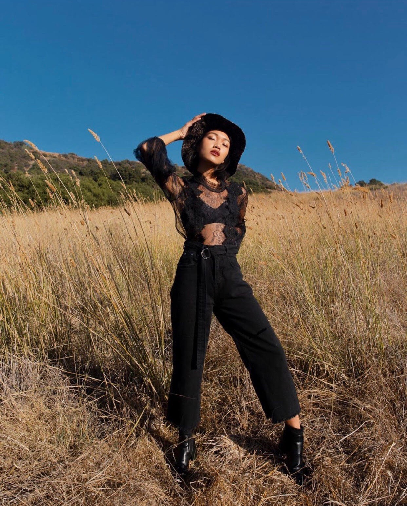

Petite in the City !
By Iley Cao
shameless self promo, check out my fashion instagram here!
A mood board for when you don't know what to wear, because dressing yourself in NYC is hard sometimes.
Sneakers are a great way to go if you're running around NYC and want to stay comfortable but cute!
Stuck on what to wear? Me too. Throw on a sundress for something that's low-maintence and fun, but still looks like you tried.
Stop bending over backwards for outfits that don't make you feel great in your own body!

All black is the way to go if you don't want to bother with matching colors! Become a true New Yorker ;)
Monochrome is having a moment! Wearing all one color makes it super easy to mix and match pieces you wouldn't typically think of wearing together!
Hello World
I'm hosted with GitHub Pages.